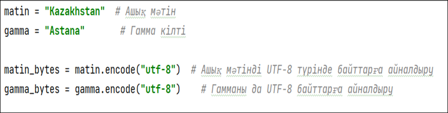
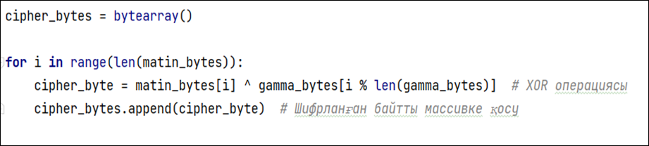
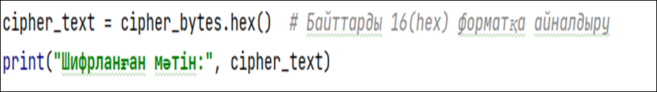
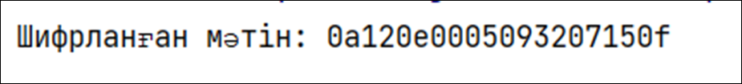

ГАММАЛАУ АРҚЫЛЫ ШИФРЛАУ (ЕКІЛІК МОДУЛЬ, UTF-8)
Гаммалау әдісі – симметриялық шифрлау әдістерінің бірі, онда ашық мәтін кілт (гамма) көмегімен XOR (екілік модуль бойынша қосу) операциясы арқылы шифрланады. Бұл әдістің басты ерекшелігі – бастапқы мәтінді қалпына келтіру үшін дәл сол гамманы пайдалану керек.
Бұл жерде біз Kazakhstan сөзін Astana гаммасымен UTF-8 кодтауында шифрлаймыз..
1. Ашық мәтінді және гамманы дайындау
- Бұл жерде Kazakhstan және Astana сөздерін UTF-8 кодтауында байттарға айналдырдық.

2. Гаммалау әдісімен шифрлау

Түсініктеме:
- Әрбір байтты гаммадағы сәйкес байтпен XOR (^) операциясы арқылы шифрлаймыз.
- Егер гамманың ұзындығы мәтіннен қысқа болса, оны қайталаймыз (i % len(gamma_bytes) арқылы).
- Шифрланған нәтижені cipher_bytes массивінде сақтаймыз.
3. Шифрланған мәтінді шығару

Шифрлау нәтижесі: "0A 12 0E 00 05 09 32 07 15 0F" .Бұл HEX түріндегі шифрланған мәлімет.

4. ҚОРЫТЫНДЫ
- Бұл жерде біз Kazakhstan сөзін Astana гаммасымен XOR операциясы арқылы шифрладық.
- UTF-8 кодтауы қолданылды, сондықтан кез келген символдарды шифрлауға болады.
- Шифрланған нәтиже HEX форматында сақталды.
Гаммалау әдісі – заманауи криптографияның негізі болып табылады, алайда кілттің кездейсоқ болуын және қайта қолданылмауын қамтамасыз ету маңызды.
Практикалық тапсырма
1-тапсырма: Шифрлау
Өз есіміңізді XOR әдісін қолданып шифрлаңыз.
2-тапсырма: Дешифрлау
Мысалдағы "0A 12 0E 00 05 09 32 07 15 0F" шифрланған мәтінін дешифрлайтын бағдарлама құрыңыз.
3-тапсырма: Шифрлау
"Криптография" сөзін шифрлаңыз.